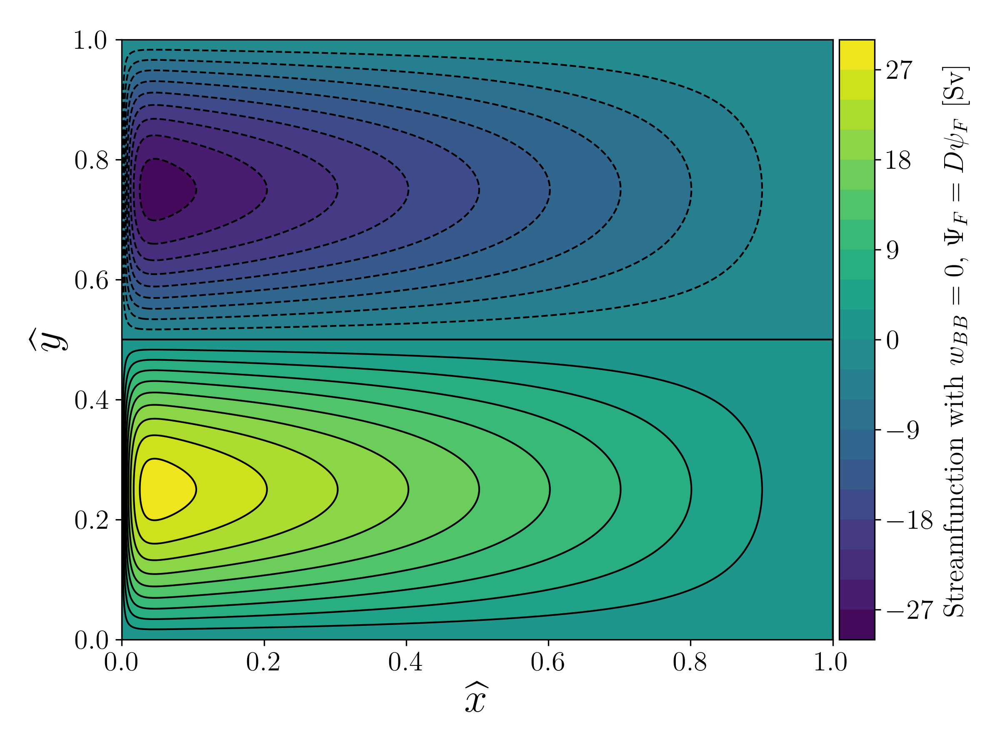
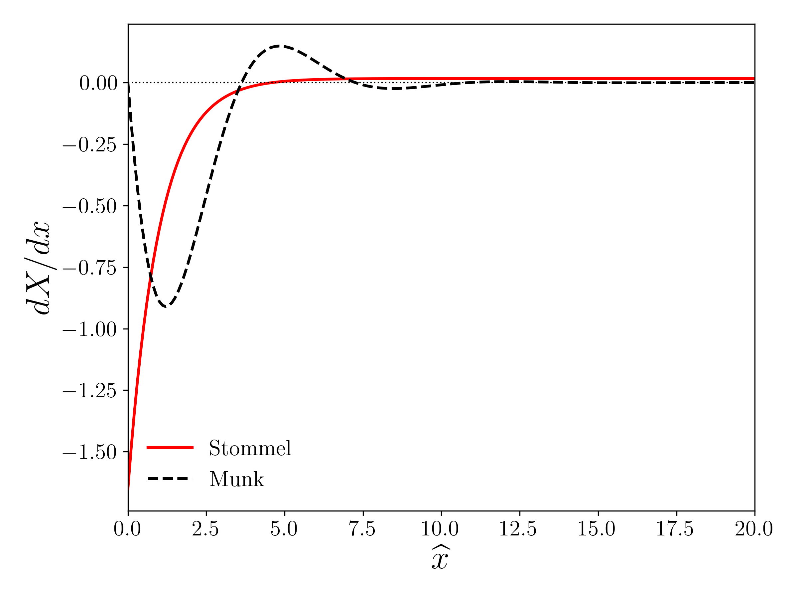
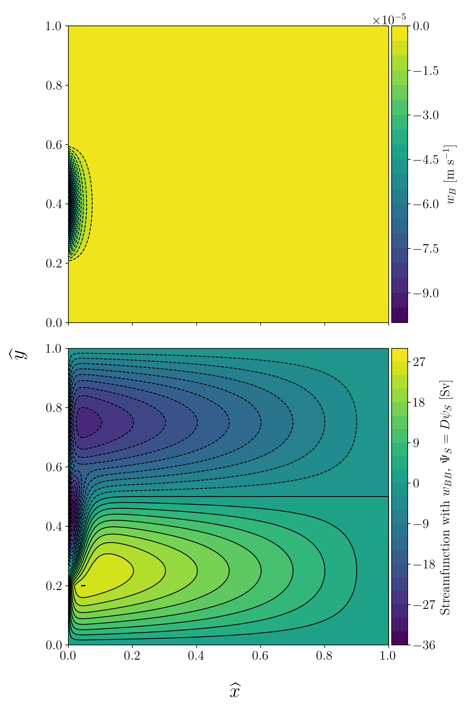
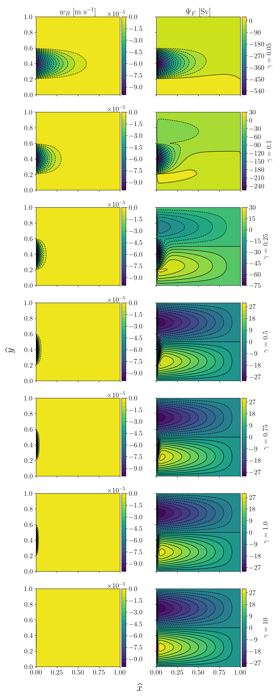
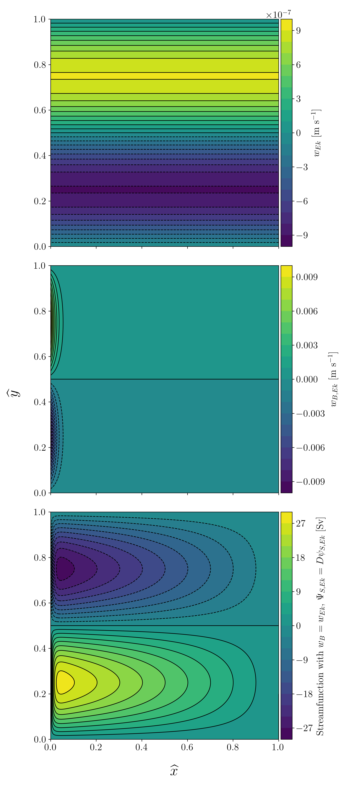

We consider the Stommel wind-driven gyre model, which has the linear vorticity balance:
\begin{equation}
\beta \partial_x\psi = \frac{f}{D}\left( w_{Ek} - w_B \right) - \epsilon \Delta \psi,
\end{equation}
where we define the Laplacian as $\Delta = \nabla^{2}$.
We can derive this equation by considering a single layer of homogeneous fluid with depth $D$ that is below a mixed layer of thickness $h_M$ which transports the wind stress and corresponding Ekman transport into the layer.
At the bottom of the layer of thickness $\delta_E$, there is a viscous boundary layer wherein the viscous stresses produced by the fluid motion against the bottom act on the fluid layer.
We assume that in this layer, the north-south motion is small enough that the $\beta$-plane approximation is valid and that the velocity of the fluid is small enough that the fluid is in geostrophic balance such that:
\begin{equation}
\beta L / f_0 \ll 1,
\end{equation}
which allows us to write the fluid motion as:
\begin{equation}
u = - \partial_y\psi \quad \text{ and } \quad v = \partial_x\psi,
\end{equation}
where we define $\psi = p / \rho f_0$.
We also define the total vorticity as a summation of the relative vorticity and the planetary vorticity, i.e.:
\begin{equation}
Q = \zeta + f = \partial_xv - \partial_yu + f_0 + \beta y.
\end{equation}
Now, as the horizontal velocities are independent of depth, we have that the only way our vorticity equation $Q$ for this model can be modified is if there is a change in the vortex stretching (i.e., a vertical change in $w$) or in lateral diffusion.
We can write this as:
\begin{equation}
\frac{\textrm{d}Q}{\textrm{d}t} = \left(\zeta + f_0 + \beta y \right)\partial_z w + A_H \Delta \zeta,
\end{equation}
where we have introduced the horizontal diffusivity $A_H$.
By our definition of the model above as geostrophic, we know that $\beta y \ll f_0$ and $\zeta \ll f_0$, for the second term being that the relative vorticity $\zeta$ is small given that the velocities and their rates of change small.
Therefore, we can write the above equation as:
\begin{equation}
\frac{\textrm{d}\zeta}{\textrm{d}t} + \beta v = f_0 \partial_z w + A_H \Delta \zeta.
\end{equation}
Assuming hydrostatic balance, $\partial_z p = - \rho g$, we can integrate the above equation with respect to $z$ as follows:
\begin{equation}
\left( \frac{\textrm{d}Q}{\textrm{d}t} + \beta v - A_H \Delta \zeta \right) \int_{-D}^0 \text{d}z = f_0\int_{w_B^\ast}^{w_{Ek}} \text{d}w,
\end{equation}
giving, assuming steady state (i.e., time-independent circulation):
\begin{equation}
\beta v = \frac{f_0}{D}\left( w_{Ek} - w_B^\ast \right) + A_H \Delta \psi,
\end{equation}
where we have assumed that the limits of our vertical velocity are composed into:
\begin{align}
\text{Top: }& w_{Ek,} \\
\text{Bottom: }& w_B^\ast = w_B + w_{Ek,B},
\end{align}
where $w_{Ek}$ is the Ekman vertical velocity at the surface produced by wind stress and transported through the mixed layer, $w_B = - \underline{u}\cdot \nabla D$ is the vertical velocity at the bottom of the single homogeneous layer induced by the bottom fluid flow $\underline{u}_B$, and $w_{Ek, B}$ is the bottom vertical Ekman velocity.
From Pedlosky (1987), we know that we can define:
\begin{equation}
w_{Ek,B} = \frac{\delta_E}{2}\zeta.
\end{equation}
Therefore, substituting in our relation between the streamfunction and the meridional velocity, we get:
\begin{equation}
\beta \partial_x\psi = \frac{f_0}{D}\left( w_{Ek} - w_B \right) - \epsilon\Delta\psi + A_H \nabla ^4 \psi,
\end{equation}
where we introduced the factor:
\begin{equation}
\epsilon = \frac{f_0\delta_E}{2D}.
\end{equation}
The Stommel model does not consider the lateral transfer of momentum to a coast through turbulent stresses (unlike the Munk model), rather the stress from the bottom Ekman layer, i.e. we neglect the fourth-order $\nabla ^4\psi$ term but keep the second-order $\Delta\psi$ term in the equation above.
Thus, we arrive at the model we are interested in this problem set, namely:
\begin{equation}
\beta \partial_x\psi = \frac{f_0}{D}\left( w_{Ek} - w_B \right) - \epsilon \Delta \psi.
\end{equation}
Mathematical Preliminaries
The Flat Bottom Double Gyre

Fig. 1: The streamfunction solution $\Psi_F = D \psi_F$ to the flat bottom double gyre problem, with the solution plotted in Sverdrups and the domain nondimensionalized.

Fig. 2: Zonal cross section of a proportional meridional velocity.
The solid red line is the section for our flat bottom gyre Stommel solution, compared to the dashed black line which is Munk's solution.
The dotted black line is the $\text{d}X / \text{d}x =0$ line, at which point the direction of the velocities change from northward (positive) to southward (negative).
Note the nondimensionalized zonal coordinate.
The Non-flat Bottom Double Gyre

Fig. 3: Bottom pressure toque forcing, $w_B$ (top) and streamfunction solution $\Psi_S = D \psi_S$ to the non-flat bottom double gyre problem.
We again note that $\Psi_F$ is plotted in Sverdups and the domain is nondimensionalized.
The deformation of the symmetric streamfunction between $30^\circ$ and $50^\circ$ is is an important feature of the streamfunction solution.
Parameter Sensitivity

Fig. 4: A parameter sensitivity study of the bottom pressure torque forcing $w_B$ (left column) and the resulting streamfunction $\Psi_S$ (right column) for a range of $\gamma \in \left[0.01, 0.1, 0.25, 0.5, 0.75, 1.0, 10\right]$.
We note the decreasing perturbation in $\Psi_S$ caused by $w_B$ as $\gamma$ increases.
The domain is again nondimensionalized and the streamfunction plotted in Sverdrups.
Removing Topographic Effects

Fig. 5: A possible distribution of $w_B$ (middle) that removes the effects imposed by $w_{Ek}$ (top) on the resulting streamfunction $\Psi_S$ (bottom).
We note the streamfunction resembles the solution to the flat bottom streamfunction $\Psi_F$.
The domain is nondimensionalized and the streamfunction plotted in Sverdrups.